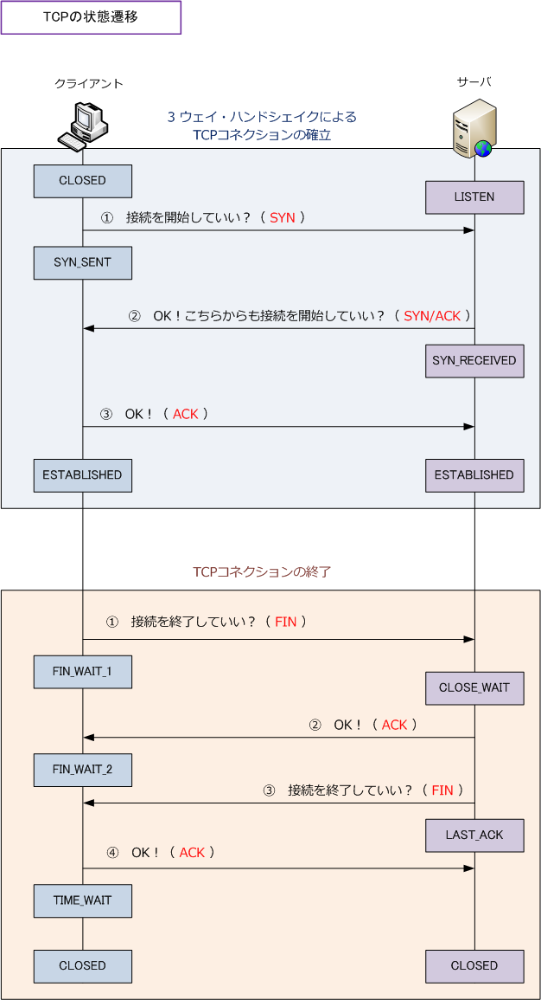
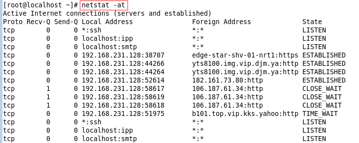

TCP State
TCPの状態遷移
TCPの3ウェイ・ハンドシェイクによるコネクション確立、コネクション終了の流れの中で、TCPでは 下図の状態遷移を行います。3ウェイ・ハンドシェイクが完了するまでに、TCPのステート（状態）は CLOSED、LISTEN、SYN_SENT、SYN_RECEIVED、ESTABLISHED などの状態遷移をしています。
また、スリーウェイハンドシェイク後のデータの送受信完了後、TCPコネクションを切断する際にも TCPのステートは FIN_WAIT、CLOSE_WAIT、LAST_ACK、TIME_WAIT の状態遷移をしています。

| ステート | 意味 |
|---|---|
| CLOSED | 未使用状態のTCPポート。クライアントが最初にアクションを起こす前の状態。 |
| LISTEN | 待ち受け状態のポート。サーバが接続要求を待機している状態。 |
| SYN_SENT | クライアントがサーバにSYNを送信したが、それに対するACKを受信できていない状態。 |
| SYN_RECEIVED | サーバがクライアントにSYNを受信したが、それに対するACKを受信できていない状態。 |
| ESTABLISHED | SYNに対するACKを受信した状態。TCPコネクションが確立して通信している状態。 |
| FIN_WAIT | アクティブクローズ側がFINを送信後の状態。 |
| CLOSE_WAIT | 相手からのFINを受け取った状態。 |
| LAST_ACK | パッシブクローズ側がFINを送信して、最後のACKを待つ状態。 |
| TIME_WAIT | コネクションの終了待ち状態。しばらくした後、CLOSEDへ遷移して終了。 |
PC上のコマンドプロンプトで netstat と入力すると、TCPのステート（状態）を確認することができます。 Linuxの場合「-a」と「-t」をオプションとした場合、利用している全てのTCPポートのみを表示できます。
